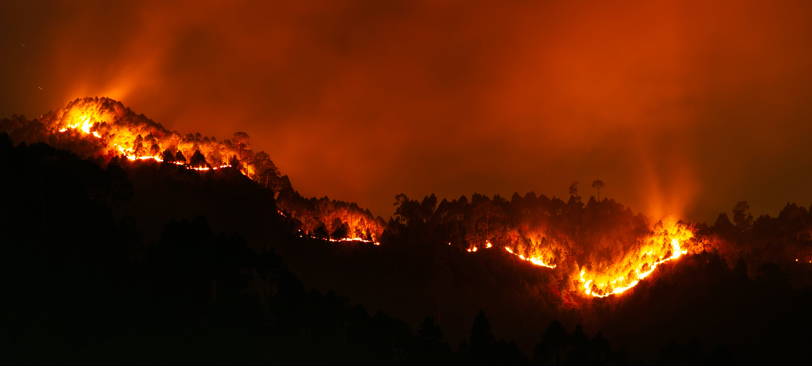

Impact of Climate Change
Climate change is a long-term change in the average weather patterns that have come to define Earths local, regional and global climates. These changes have a broad range of observed effects that are synonymous with the term.
Changes observed in Earths climate since the mid-20th century are driven by human activities, particularly fossil fuel burning, which increases heat-trapping greenhouse gas levels in Earths atmosphere, raising Earths average surface temperature. Natural processes, which have been overwhelmed by human activities, can also contribute to climate change, including internal variability (e.g., cyclical ocean patterns like El Niño, La Niña and the Pacific Decadal Oscillation) and external forcings (e.g., volcanic activity, changes in the Suns energy output, variations in Earths orbit).
Scientists use observations from the ground, air, and space, along with computer models, to monitor and study past, present, and future climate change. Climate data records provide evidence of climate change key indicators, such as global land and ocean temperature increases; rising sea levels; ice loss at Earth’s poles and in mountain glaciers; frequency and severity changes in extreme weather such as hurricanes, heatwaves, wildfires, droughts, floods, and precipitation; and cloud and vegetation cover changes..

Solutions to Climate Change
The single-most important thing that we can do to combat climate change is to drastically reduce our consumption of fossil fuels. The burning of coal, oil, and natural gas in our buildings, industrial processes, and transportation is responsible for the vast majority of emissions that are warming the planet—more than 75 percent. In addition to altering the climate, dirty energy also comes with unacceptable ecological and human health impacts.